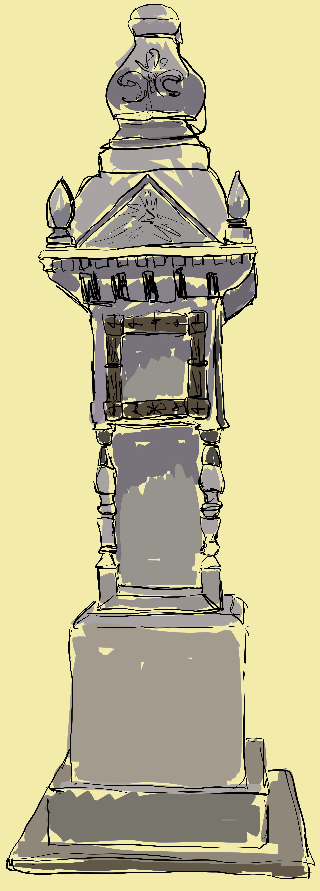

 МЕМОРИАЛЬНЫЙ СТОЛБ В КОЛОМЕНСКОМ ВОЗДВИГНУТ В ЧЕСТЬ ОСВОБОЖДЕНИЯ КРЕСТЬЯН ОТ КРЕПОСТНОГО ПРАВА. ПАМЯТНИК УСТАНОВИЛ ПРОСТОЙ НАРОД В БЛАГОДАРНОСТЬ ИМПЕРАТОРУ АЛЕКСАНДРУ ВТОРОМУ ЗА ЕГО ВЕЛИКОЕ ДЕЛО.
В 1861 ГОДУ ПО ПРИКАЗУ ИМПЕРАТОРА АЛЕКСАНДРА ВТОРОГО В РОССИИ БЫЛО ОТМЕНЕНО КРЕПОСТНОЕ ПРАВО. ЭТА РЕФОРМА ДАВАЛА ВОЗМОЖНОСТЬ РАЗВИТИЮ ТЕХНИКИ И ИНДУСТРИАЛИЗАЦИИ В СТРАНЕ, А ТАКЖЕ ОТМЕНЕ ТАК НАЗЫВАЕМОГО «РАБСТВА». МНОГИЕ КРЕСТЬЯНЕ В ТО ВРЕМЯ БОГОТВОРИЛИ ВЕЛИКОГО ЦАРЯ И ПИСАЛИ ЕМУ ДЕСЯТКИ БЛАГОДАРСТВЕННЫХ ПИСЕМ. В 1881 ГОДУ ПОСЛЕ СМЕРТИ АЛЕКСАНДРА ВТОРОГО КРЕСТЬЯНЕ ДЕРЕВНИ ШАЙДОРОВО РЕШАЮТ ВОЗДВИГНУТЬ МЕМОРИАЛ В ПАМЯТЬ О РЕФОРМЕ И ИМПЕРАТОРЕ. ЕГО УСТАНАВЛИВАЮТ РЯДОМ С ДЕРЕВНЕЙ НА ОДНОЙ ИЗ УЛИЦ ИЛИ ПЕРЕКРЕСТКОВ (ИСТОРИЧЕСКИЕ ФАКТЫ РАСХОДЯТСЯ). ПАМЯТНИК БЫЛ ПОСТАВЛЕН ТАК, ЧТОБЫ ЕГО МОЖНО БЫЛО ОСМОТРЕТЬ СО ВСЕХ СТОРОН.
ПАМЯТНИК ПРЕДСТАВЛЯЛ СОБОЙ ЧЕТЫРЕХМЕТРОВЫЙ СТОЛБ СОСТОЯЩИЙ ИЗ ЧЕТЫРЕХ БЛОКОВ: ЦОКОЛЯ, ДВУХ ЦЕНТРАЛЬНЫХ УЧАСТКОВ И ФИГУРНОГО ЗАВЕРШЕНИЯ. УСТАНОВЛЕН ОН НА ДВУХ БЕЛОКАМЕННЫХ ПЛИТАХ. ЦЕНТРАЛЬНЫЕ ЯРУСЫ УКРАШАЮТ ФИГУРИСТЫЕ МАЛЕНЬКИЕ КОЛОННЫ И РИСУНКИ. ВЕРХУШКА ТАКЖЕ ОТЛИЧАЕТСЯ СВОЕЙ КРАСОТОЙ. ПО СВИДЕТЕЛЬСТВАМ ДОКУМЕНТОВ, ИЗНАЧАЛЬНО СТОЛБ БЫЛ ОФОРМЛЕН ИКОНАМИ И НАДПИСЯМИ, КОТОРЫЕ ДО НАШИХ ДНЕЙ НЕ ДОШЛИ.
ПЕРЕВЕСТИ СТОЛБ С ПРЕЖНЕГО МЕСТА РАСПОЛОЖЕНИЯ БЫЛО РЕШЕНО В 70-Е ГОДЫ 20 ВЕКА. В ТО ВРЕМЯ В ДЕРЕВНЕ ШАЙДОРОВО НАЧАЛСЯ СНОС ДОМОВ, И ПАМЯТНИК БЫЛ ОТПРАВЛЕН НА ВРЕМЕННОЕ ХРАНЕНИЕ В МУЗЕЙ-ЗАПОВЕДНИК КОЛОМЕНСКОЕ. ЗДЕСЬ ОН НАХОДИТСЯ И ПО СЕЙ ДЕНЬ. ЧТОБЫ ПРЕДОТВРАТИТЬ ПОПАДАНИЕ ВЛАГИ И РАЗРУШЕНИЕ, НАД НИМ УСТАНОВЛЕН СПЕЦИАЛЬНЫЙ НАВЕС. УВИДЕТЬ ЕГО МОЖЕТ ЛЮБОЙ ЖЕЛАЮЩИЙ В ЦЕНТРАЛЬНОЙ ЧАСТИ УСАДЬБЫ.